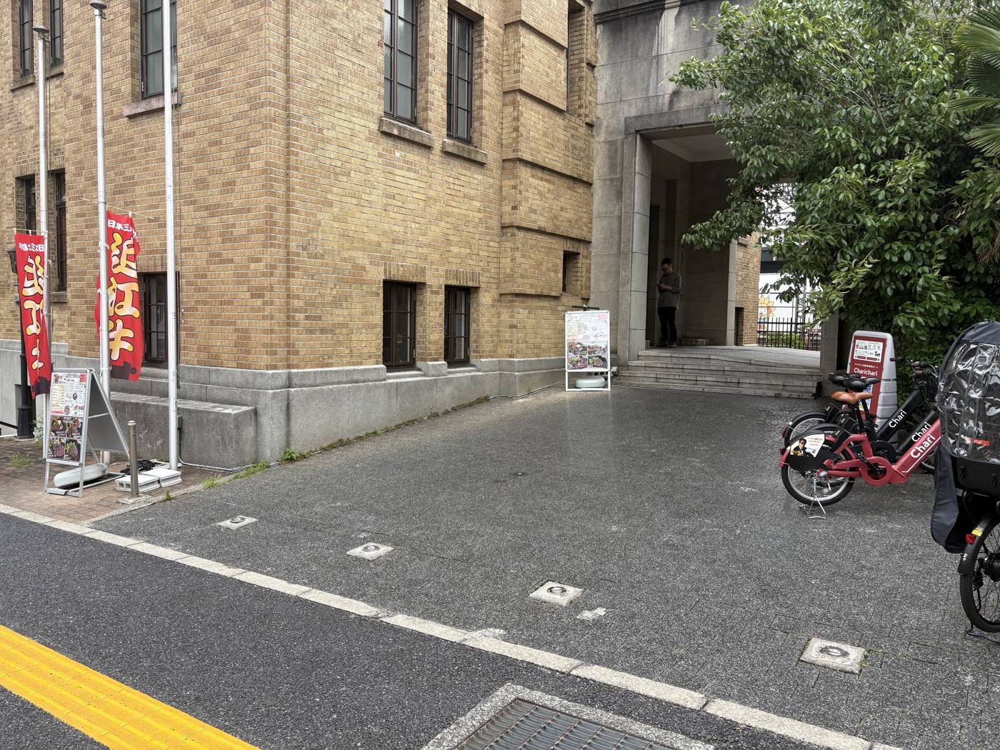
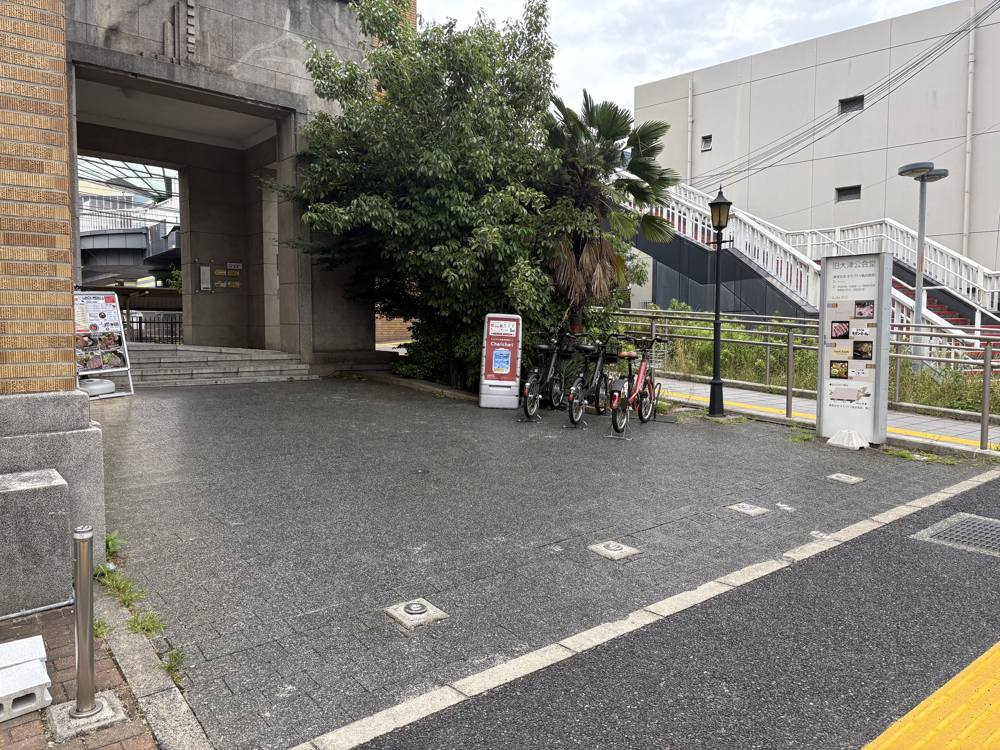
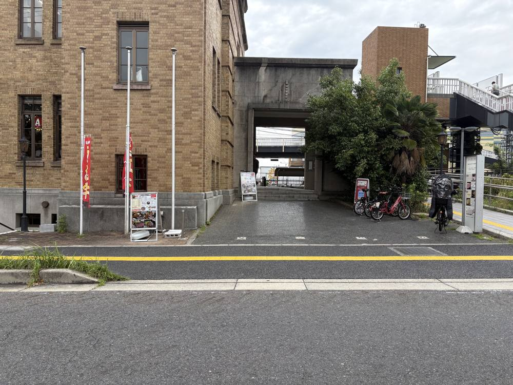
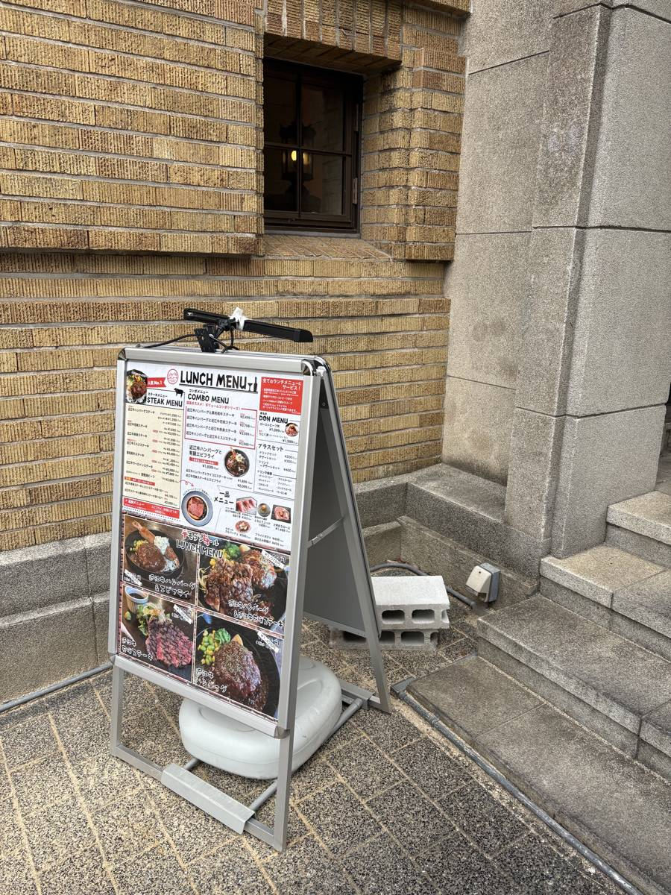
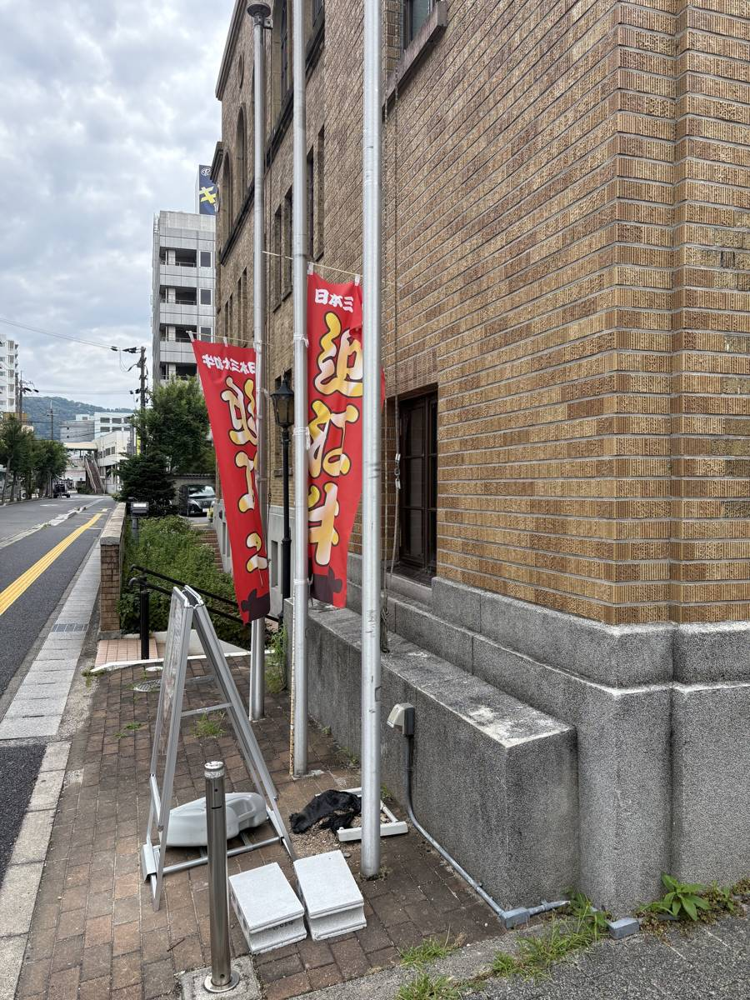
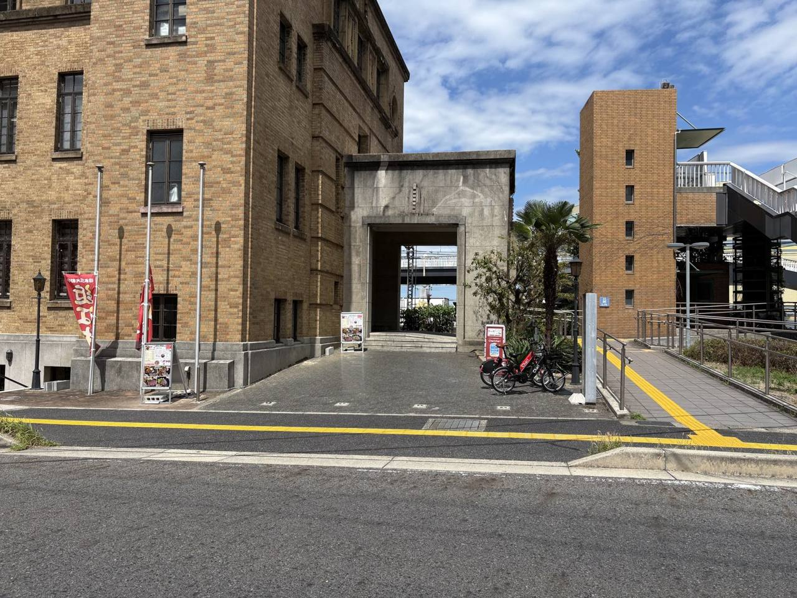
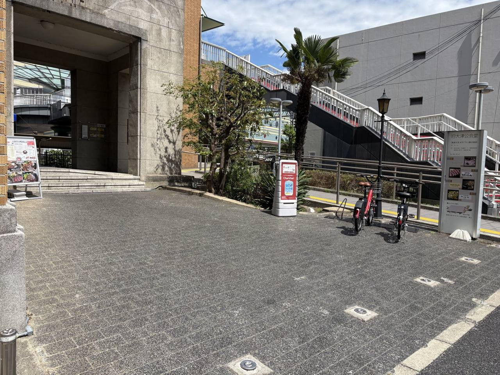
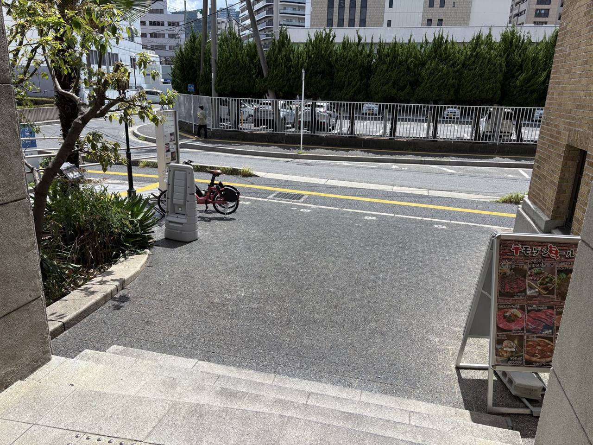

売り場レンタル ／ 飲食テイクアウト会場
大津市浜大津・京阪びわ湖浜大津駅すぐ、登録有形文化財〈旧大津公会堂〉のレンガ建築前の前庭。飲食のテイクアウト出店専用の会場です。テント等の持ち込みで、9〜21時・通年で出店できます（飲食の営業許可をお持ちの方限定）。売上は、全額あなたのもの。いまお店を営む方の「2号店を出さずに試す」場としても。
キャンペーン出店料 平日 1,500円／区画〜（土日レギュラーは月額32,000円）
昼の部 9:00〜15:00・夜の部 15:00〜21:00 の区画制／年中出店可／電源・水道あり／同時2店舗まで出店可／京阪びわ湖浜大津駅すぐ ※隣に近江牛のお店があるため、牛肉を使った商品はご遠慮ください。
立地
大津市浜大津、京阪「びわ湖浜大津駅」のすぐ近く。会場は、登録有形文化財〈旧大津公会堂〉——重厚なレンガ建築の正面にある、御影石舗装の前庭です。びわ湖にもほど近く、観光や地域の人通りがある街なかの立地です。
区画は御影石舗装の平面。電源・水道があり、テント等での出店に向いています。駅からの人の流れと、文化財の佇まいが、出店の背景になります。
ひとつだけ、お願いがあります。同じ建物に近江牛のお店が入っているため、牛肉を使った商品はご遠慮ください。それ以外の飲食テイクアウトは歓迎です。

この場所の活かし方
旧大津公会堂は、ただの出店スペースではありません。〈食の目的地〉〈駅前・湖畔の人通り〉〈文化財の佇まい〉——3つの資産が重なる場所です。これらを借りれば、同じ商品でも"売れ方"が変わります。
1934年築・登録有形文化財のレンガ建築が、商品の背景になります。写真が映え、物語が生まれる。ふつうのテイクアウトが、"わざわざ撮りたくなる一品"に変わります。
映える見せ方・SNS発信と相性が良い隣は近江牛の名店。"食"を目当てに来た人の流れが、目の前にあります。牛肉は出せませんが、だからこそ競合しない——ドリンク・スイーツ・コーヒー・軽食が、"ついで"に強い。
近江牛と競合しない補完商品で勝負できる9〜21時、電源と水道あり。しかも花火大会の日を除けばほぼ通年。昼の観光、午後の散策、夕方〜夜のびわ湖時間——時間帯ごとにお客様が変わるので、一番おいしい時間を狙って出られます。
電源・水道ありで、その場調理のご相談も可能京阪「びわ湖浜大津駅」すぐ。湖畔観光の動線と、地元の往来が交わる立地。観光客の"非日常の財布"と、地元客の"リピート"——その両方に届きます。
観光客と地元客、二つの層に同時に届く「牛肉NG」は、制約ではなく、ポジショニング。食の名店の隣で、かぶらない一品を出す——それが、この場所でいちばん効く戦い方です。
火のこと
文化財の前庭なので、火の扱いだけは分けて考えています。とはいえ——この会場に合う商品の多くは、そもそも火を使いません。
電気の調理・完成品の販売は、歓迎です。
エスプレッソやドリンク、ソフトクリーム、かき氷、ワッフルや焼き菓子、クレープ——電源も水道も整っているので、電気で仕上げる商品・作り置きの完成品は、そのままお申し込みいただけます。この会場は、もともとそういう出店のために設備をご用意しています。
裸火・ガスを使う出店は、条件付きでご相談ください。
ガスバーナー・炭火、ガス式のキッチンカーは、建物からの距離・消火の備え・保険などを確認したうえで、個別にご相談します。「文化財の前で火を入れられる、数少ない会場」——だからこそ、そこだけは丁寧に進めさせてください。
※ 大型の炭火など、延焼リスクの高い設備はご遠慮いただいています。
「火のルール」も、制約ではありません。電気の商品は広く、裸火は条件を満たす方に。そう分けることで、この場所を安心して長く使える会場にしています。
集客の背景
「人通りがある」の、中身です。旧大津公会堂の前には、人を呼ぶ"理由"がいくつも重なっています——平日のビジネス、休日の観光、その両方。狙って出れば、その流れに乗れます。
駅を出てすぐ。通勤・通学に加え、観光客の乗り換え動線が、毎日ここを通ります。
観光船が発着する大津港がすぐそば。湖上観光の行き帰りに、人が前を通ります。
同じ建物に、"食"を目的に訪れる人の流れ。あなたの一品が、その"ついで"に出会われます。
レンガ建築そのものが目印。街歩きや地域イベントの拠点にもなる場所です。
すぐ近くに滋賀銀行本店をはじめ事業所が多く、平日のランチ需要があります。観光は休日が中心ですが、ここは平日も働く人で動く——休日の観光と合わせて、曜日を問わず需要がある立地です。
時間帯で変わる、売れ方。
9〜21時・年中。平日はオフィスのランチ、休日は観光——曜日でも時間帯でも客層が変わるので、"一番おいしい時間"を狙って出られます。
会場の様子
実際の会場の写真です。広さ・路面・まわりの環境の目安にしてください。出店に使えるのは、店頭側の間口 約7.2m・奥側の間口 約3.6m・奥行 約3.6m の台形です（奥に向かって幅が狭くなります）。写真に写るシェアサイクルのポートや他テナントの看板は利用範囲の外にありますが、塞がないようご配慮ください。






料金プラン ── 3つの商品から選ぶ
① スペースのみ ── まず出てみる
1日を昼の部（9:00〜15:00）・夜の部（15:00〜21:00）の2区画に分けています。朝とランチを獲りにいくなら昼の部、夕方の観光と仕事帰りを獲るなら夜の部——商品に合う時間だけ、借りられます。
| プラン | 時間 | 料金 |
|---|---|---|
| 平日・昼の部 | 9:00〜15:00 | 1,500円／区画終日は3,000円 |
| 平日・夜の部 | 15:00〜21:00 | 1,500円／区画 |
| 土日スポット | 昼の部／夜の部 | 2,500円／区画終日は5,000円 |
| 土日レギュラー毎週の定位置に | 当月の土日すべて・終日 | 月額 32,000円1日あたり約4,000円・席の確約つき |
※いずれも開業応援のキャンペーン価格（2026年内）です。2027年以降は、実績をふまえて見直します。
※区画の入替：前の区画は15:15までに撤収、次の区画は14:45から設営いただけます。
※設営を始める前と、撤収を終えたあとに、建物2階の事務所へお声がけください。運営スタッフは常駐しませんが、施設側が当日の出店状況を把握しておく必要があります（出店規約 第9条の2）。
※土日レギュラーは「当月の土日すべてに出店できる権利」です（土日が9〜10日ある月も同額）。未出店分の繰越・雨天の返金はありません。会場都合でご利用いただけない日（びわ湖大花火大会 等）は、あらかじめ出店規約でご案内します。解約は翌月末までの予告制です。
※同時に出店できるのは2店舗まで。土日レギュラーは2枠のうち1枠までとし、もう1枠はどなたでも申し込めるスポット枠として空けています。
※キャンセル・返金は出店規約 第14条によります（7日前まで全額返金／6日前〜2日前50%／前日・当日は返金なし。荒天中止は全額返金または振替）。
② 販売データパック ── 売る準備ごと借りる
9,800円／日・税込（終日）
「出た」で終わらせず、売上・客単価・売れた時間・顧客評価が分かる状態でお返しします。
※レポートは、出店終了後24時間以内にご報告いただく売上データ（簡易フォーマットあり・所要5分ほど）をもとに作成します。
③ 販売実証パック ── 出店を「検証」にする
33,000円／2日・税込（平日＋土日）
新商品・2号店候補・開業前・補助金申請前の販売実績づくりに。レポートは持続化補助金・創業融資の申請時に、販路開拓の実証データとして活用できる書式でお渡しします。
※レポートは、各出店日の売上報告（出店終了後24時間以内・簡易フォーマットあり）と、事前設計で決めた目標値をもとに作成します。
※いずれのプランも、テーブル・テント・延長コード等の備品、商品・什器・仕入はご自身でご用意ください。
※パックの告知・レポートの内容は標準セットです。会場・日程の状況により一部調整する場合があります（お申し込み後にご案内）。
※販売データパック・販売実証パックは、出店者様からの売上報告を前提とするサービスです。ご報告いただいた実績は、レポート作成のほか、個別の出店者が特定されない統計的な形で、会場の運営・告知の改善に活用します（出店規約 第13条の2）。
納品物のサンプル
パックで、何が手元に残るのか。実物のイメージをご覧いただけます（クリックで開きます）。店名・数値はすべて架空の例です。
出店日レポート（サンプル）
〇〇焼菓子店 様（架空の例）｜10月 土曜・晴れ｜旧大津公会堂 前庭
時間帯別の売れ方
来場者アンケート（回答21件）
満足度 4.6／5点 ・ 「また買いたい」86% ・ 知ったきっかけ：通りがかり57%／SNS29%／その他14%
「文化財の前という場所も込みで、良い買い物をした気分になれた」「焼き上がり時間が分かればまた来たい」（自由回答より抜粋）
販売実証レポート（サンプル）
〇〇コーヒー 様（架空の例）｜平日（金）＋土曜の2日間出店｜旧大津公会堂 前庭
1．自社の強みと商品（事前設計・60分より）
商品：自家焙煎コーヒー（1杯600〜800円）。強み：産地直仕入れの豆と、淹れながらの会話。
設定した目標：客単価 700円以上 ・ 1日売上 30,000円 ・ 「また買いたい」70%以上
2．市場動向 ── 会場での実測
| 平日（金） | 土曜 | 目標 | |
|---|---|---|---|
| 売上 | 18,400円 | 41,200円 | 30,000円 |
| 客単価 | 615円 | 779円 | 700円 |
| 「また買いたい」 | 68% | 81% | 70% |
客層：昼は湖畔観光の来訪者、夕方以降は地元の往来が中心。時間帯で財布が入れ替わる立地特性を確認。
3．販路開拓の取組と効果
事前注文ページ経由の予約は8件（売上の約12%）、SNS告知経由の来店は約3割。土曜は売上・客単価・リピート意向のすべてで目標を超過。平日は昼帯が弱く、夕方（17時以降）に売上の6割が集中しました。価格帯（1杯600〜800円）の受容性は、観光客・地元客の双方で確認できました。
4．判定と次の一歩
判定：改善して継続
土日を軸に月4回出店した場合、月商16万円前後のペース。平日に出るなら17〜21時の夜の部に絞ることを推奨します。次の一歩は、判定後30分の開業ブリッジ面談でご相談ください（土日レギュラーへの切り替え／開業・補助金の準備／いったん撤退、いずれの場合も具体的な段取りをご案内します）。
※本判定は2日間の実測にもとづく参考情報です。天候・季節・近隣イベントにより結果は変動します。判定は継続・改善・撤退の3区分で、撤退となった場合も「何が足りなかったか」を数値でお渡しします。
※本レポートの章立て（自社の強み・市場動向・販路開拓の取組と効果）は、小規模事業者持続化補助金の経営計画書の記載項目に対応しており、補助金・創業融資の申請資料として活用できます。申請のご相談は、お近くの商工会・商工会議所の無料支援窓口をご利用ください（採択・経費認定を保証するものではありません）。
事前注文ページ（出店日の前にInstagram/LINEで告知）
10月◯日（土）旧大津公会堂前庭に出店｜〇〇焼菓子店（架空の例）
バターサンド（600円）／ 湖国レモンケーキ（450円）／ 焼き菓子詰め合わせ（1,200円）
［お取り置き予約はこちら］ ― 事前に予約すると、売り切れ前に受け取れます。予約件数は出店前に一覧でお渡しします。
来場者アンケート（会場掲示のQRコードから・3問30秒）
① 今日の出店を何で知りましたか（通りがかり／SNS／紹介／その他）
② 商品の満足度を教えてください（5段階）
③ また買いたいと思いますか（はい／どちらとも／いいえ）＋ひとことメッセージ
回答は集計してレポートに反映します。個人情報は取得しません。
※サンプルの店名・数値・コメントはすべて架空のもので、実際の成果を保証するものではありません。レポートの様式は標準セットです。
いまお店を営む方へ
物件を借りて2号店を出すなら、保証金・内装・数年の賃貸契約——数百万円の意思決定です。ここなら平日1,500円から、駅前・観光動線の土日でも月32,000円。保証金なし、撤退自由。お店の看板商品をテイクアウトにして、新しい客層に試すことができます。
メリット 1
売上を立てる
保証金ゼロ・撤退自由。遊休時間と看板商品を、駅前・観光動線の追加売上に変えます。売上は全額あなたのもの。
メリット 2
のれんを守ったまま、新商品の実験
本店で試作品を出すと、常連の目と店の看板に響きます。ここは本店から切り離された会場。失敗のコストがブランドに及ばない場所で、新商品も値付けも試せます。
たとえば、こんな使い方——
居酒屋・バー・ダイニングの厨房と仕込みは、昼は空いています。その遊休時間だけを、駅前ランチの売上に変える——昼の部1,500円で。
お店で製造・包装した商品の販売は、出店のなかでも最も身軽なかたちです。夕方の部で、仕事帰りとびわ湖の夕景の時間帯を。
並びきれなかったお客様に「並ばず買える出張所」を。本店の商圏の外——観光客の財布に、看板商品が届きます。
運営のLINE公式で開催前に出店メニューを配信し、事前注文を受け付けます。当日を迎える前に、売れる数がある程度見えます。
出店条件
会場ごとに、売れる商品・使える設備・駐車の条件が異なります。下記をご確認のうえ、ご予約ください。
※「出店料」は、開業応援のキャンペーン価格（2026年内）です。2027年以降は、実績をふまえて見直します。会場ごとに条件が異なるため、ご予約前に最新の会場情報をご確認ください。隣接店への配慮（牛肉を使った商品の不可など）にご協力をお願いします。
出店の流れ ── セルフ出店
本会場はスタッフが常駐しない無人運営です。面談なしで申し込め、当日はマニュアルに沿ってご自身のペースで設営・販売・撤収まで完了できます。当日の連絡窓口はLINE公式アカウント。「現地の人に気を使う」時間をゼロにして、販売に集中してください。
※設営・撤収時の写真の送信は、出店の記録と原状回復の確認のためにお願いしているものです（出店規約 第9条の2）。
空き状況
昼の部（9:00〜15:00）・夜の部（15:00〜21:00）ごとの空き状況です。空いている枠をタップすると、下のお申し込みフォームに日付と区画が入ります。平日は1区画1,500円、土日は2,500円です。
※表示は運営が把握している時点の状況です。お支払いの完了順に確定するため、お申し込みの時点で埋まっている場合があります。
出店のお申し込み
下記フォームからお申し込みください。空き状況を確認し、運営（BRIDGE CYCLE）より折り返しご連絡します。来店や面談は不要です。出店できる内容か迷う段階のご相談も歓迎です。